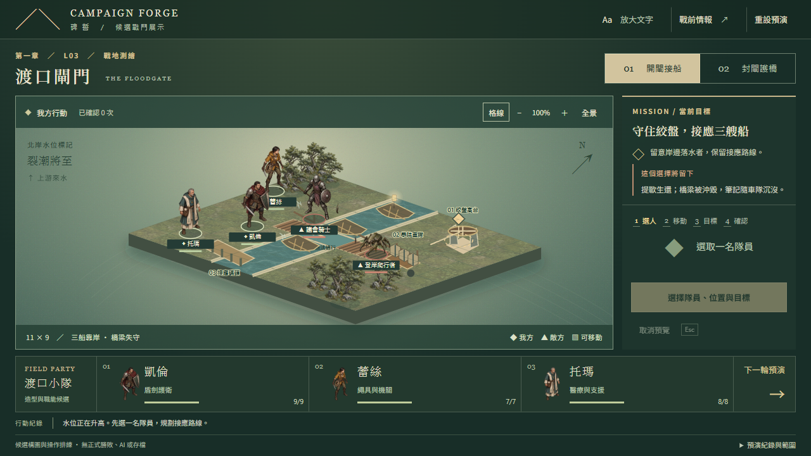

CAMPAIGN FORGE · L03 ART QUALITY GATE
同一個渡口，兩套畫面方向
舊版美術已被拒絕。以下為實際 React 畫面的靜態候選，尚未通過商業美術驗收。兩案共用 K1 抉擇前的單位、HP、三船與三箱資料；沒有新增戰鬥規則或動畫。
1280 × 720 · 同狀態實際截圖
1920 × 1080 · 點圖檢視原尺寸
被拒絕的 b783cf9 · 保留原始 Before
這張是舊操作頁的開閘狀態，與新樣板的「抉擇前」不同；僅作構圖／畫風歷史對照，不宣稱同戰局比較。

舊版 720p，未覆寫。審查時請看
洪水是否構成威脅？三船、提歐的燈與瑪歌車隊是否讀得出？角色有沒有踩進同一個世界？哪套更值得深化，或兩套都需要重做？工程通過不替代這些判斷。
既有操作頁保留。新圖尚未接到 11×9 導航／移動；NPC 與船畫入底圖，需要選案後分層。橋欄遮擋為固定 mask，人物仍有靜態立牌感。動畫 Gate 未開始。